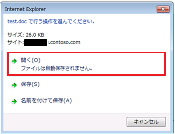
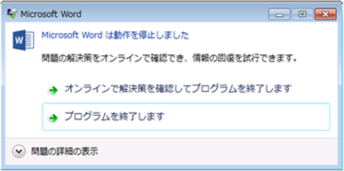
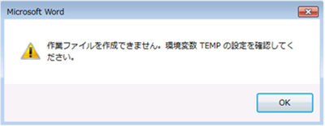
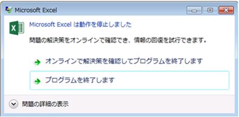
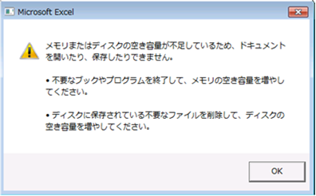
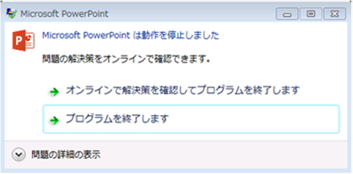
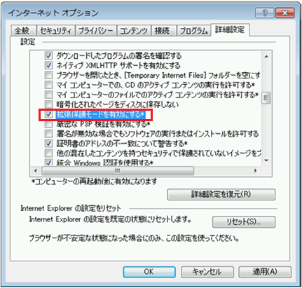

(※ 2017 年 3 月 27 日に Japan Office Support Blog に公開した情報のアーカイブです。)
こんにちは、Office サポートの荒井です。
今回の投稿では、Windows 7 64bit で 32bit 版の Office 2010 以降の製品を使用しているクライアントから、インターネット上の Office ファイルを開く時に、エラー メッセージが表示されファイルが開かない現象について説明します。
現象
インターネットから Officeファイルのリンクをクリックし、[開く] を選択すると、Office アプリケーションの動作が停止したり、エラーメッセージが表示され、ファイルが開かない場合があります。

図1: ファイルを開くダイアログ

図2: doc ファイルを開いた場合のエラー例

図3: doc ファイルを開いた場合のエラー例

図4: xls ファイルを開いた場合のエラー例

図5: xls ファイルを開いた場合のエラー例

図6: ppt ファイルを開いた場合のエラー例
現象発生の条件
この現象は、以下の条件に合致する場合に発生することを確認しています。
- [インターネット] ゾーンと見なされる URL からOfficeファイルを開いている
- Windows 7 (64bit) + IE11 の拡張保護モードを有効に設定している
※ IE11 の拡張保護モードが有効になっているか確認する手順
[インターネット オプション]-[詳細設定]

図7: インターネット オプション ダイアログ
原因
IE の技術的な制約によって、64bit の プロセス整合性レベル [低] の IE プロセスから、32bit の COM アプリケーション (今回の場合ですと、Office 製品) の ElevationPolicy の判定ができません。
そのため、Office アプリケーション起動時に期待するプロセス整合性レベル [中] に昇格して起動できないため、上述のようなエラーが発生します。
対処方法
運用要件に合わせて、以下いずれかの方法をご検討いただきますようお願いいたします。
- IE の [インターネット オプション]-[セキュリティ] から、該当の URL を [信頼済みサイト] もしくは [ローカル イントラネット] に追加する
- Officeファイルのリンクをクリックしたとき、[開く] を選択するのではなく、[保存] を選択する
- [拡張保護モードを有効にする] オプションのチェックを外し無効にする
参考情報
タイトル : IE10 & IE11 : 拡張保護モードの実態
アドレス : https://blogs.technet.microsoft.com/jpieblog/2013/11/29/ie10-ie11/
タイトル : 保護モードの Internet Explorer の理解と機能
アドレス : https://msdn.microsoft.com/ja-jp/library/bb250462(v=vs.85).aspx
今回の投稿は以上です。
本情報の内容（添付文書、リンク先などを含む）は、作成日時点でのものであり、予告なく変更される場合があります。